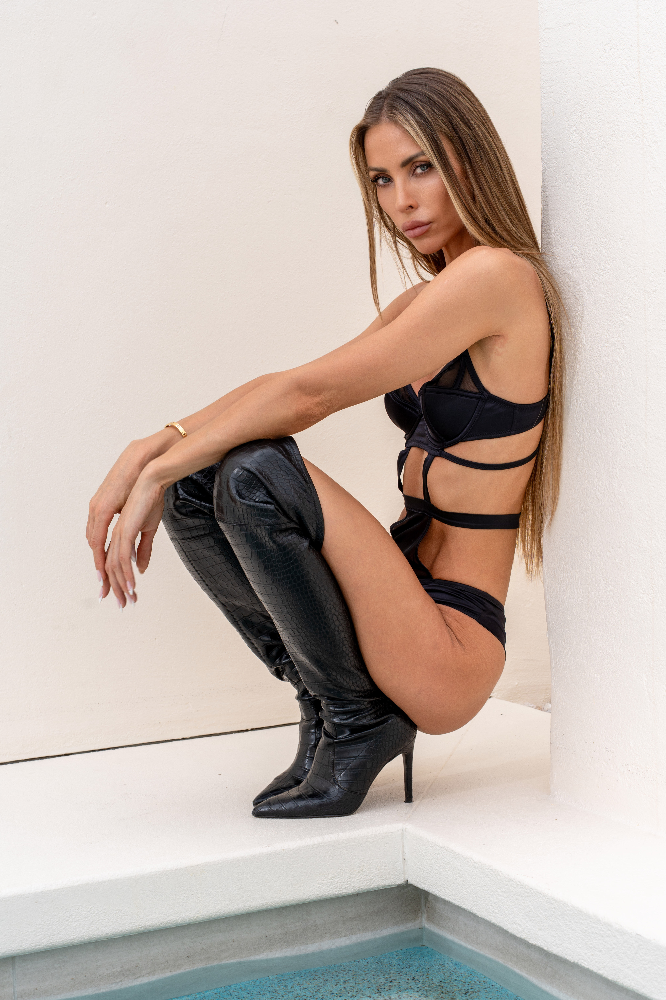
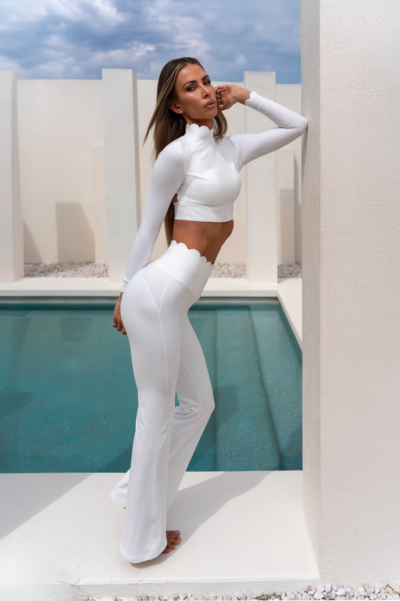
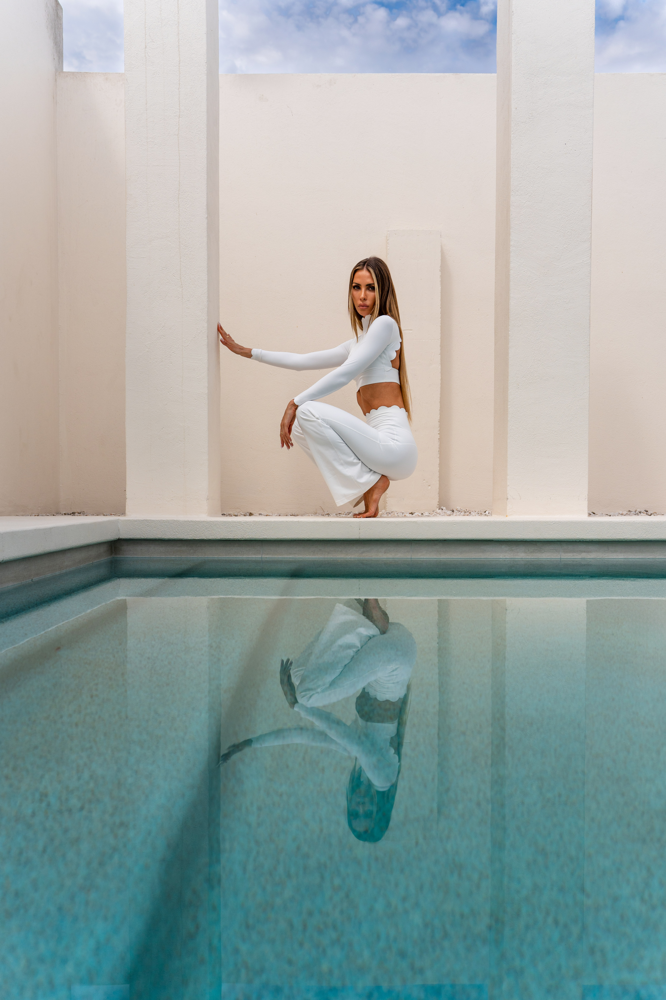
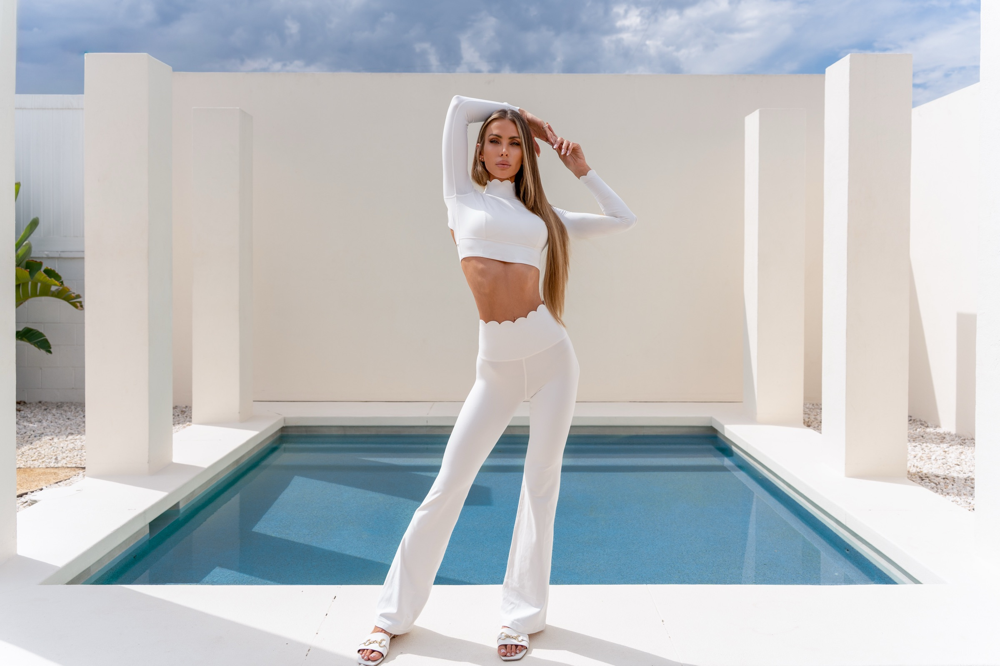
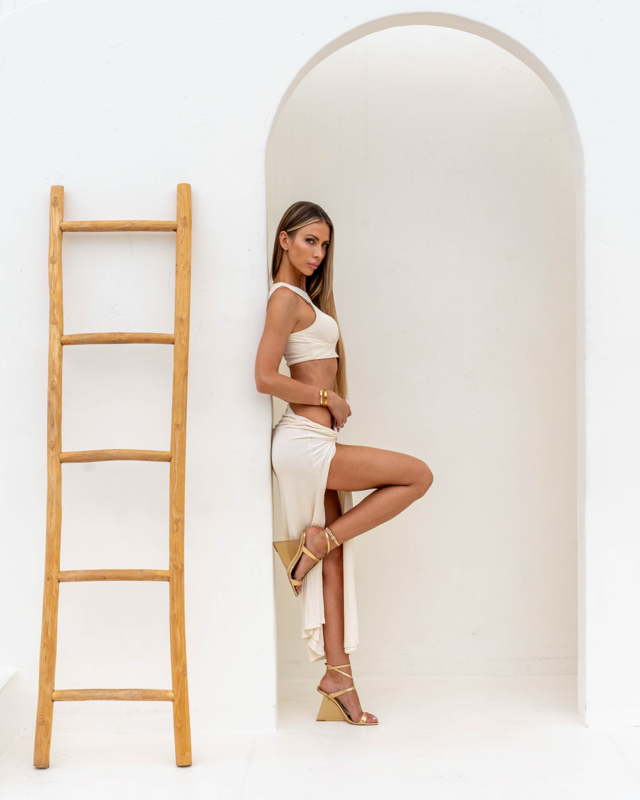
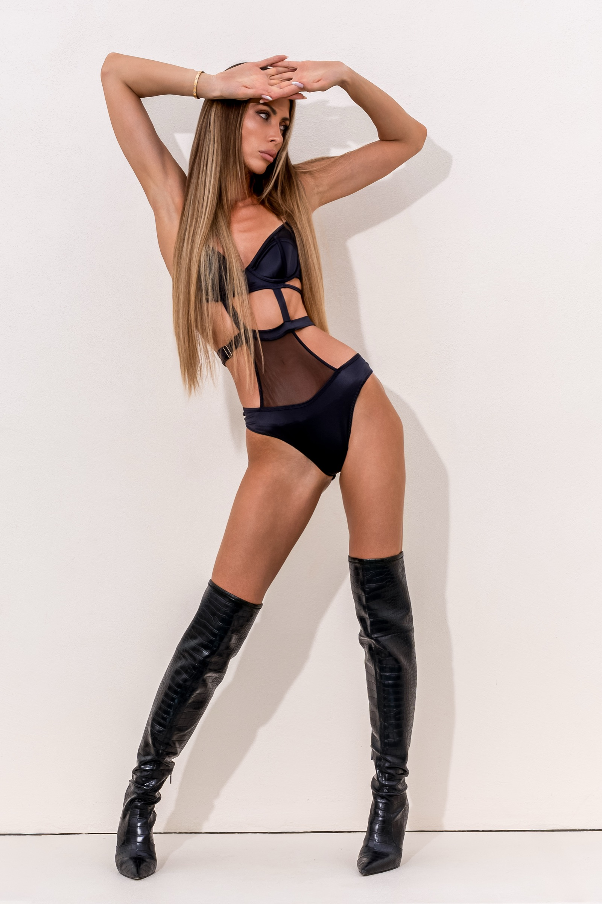

Villa Blanco
Dasha Alexandria
Shot at Villa Blanco — where clean desert minimalism meets wide-open
silence. Dasha brought a presence that didn't just fill the space;
it rewired it. A mix of softness and sharpness that made the endless
horizon feel like a willing collaborator.
Dasha Alexandria

Villa Blanco





Villa Blanco is all horizon—minimalism, heat shimmer, and negative space. Dasha brought presence, intention, and a kind of cinematic quiet that can’t be faked. This shoot wasn’t about posing; it was about letting her energy settle into the landscape and catching whatever the desert gave back.